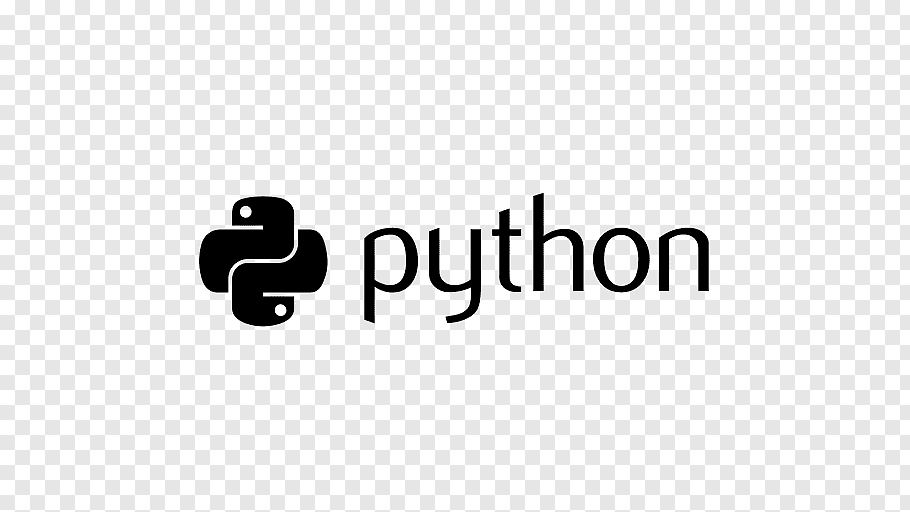

Python

Python is an interpreted, high-level, general-purpose programming language. Created by Guido van Rossum and first released in 1991, Python's design philosophy emphasizes code readability with its notable use of significant whitespace. Its language constructs and object-oriented approach aim to help programmers write clear, logical code for small and large-scale projects
Python is dynamically typed and garbage-collected. It supports multiple programming paradigms, including structured (particularly, procedural), object-oriented, and functional programming. Python is often described as a "batteries included" language due to its comprehensive standard library.[31]
Python was conceived in the late 1980s as a successor to the ABC language.Python 2.0, released in 2000, introduced features like list comprehensions and a garbage collection system capable of collecting reference cycles. Python 3.0, released in 2008, was a major revision of the language that is not completely backward-compatible, and much Python 2 code does not run unmodified on Python 3.
The Python 2 language, i.e. Python 2.7.x, was officially discontinued on 1 January 2020 (first planned for 2015) after which security patches and other improvements will not be released for it.[32][33] With Python 2's end-of-life, only Python 3.5.x[34] and later are supported.
Python interpreters are available for many operating systems. A global community of programmers develops and maintains CPython, an open source[35] reference implementation. A non-profit organization, the Python Software Foundation, manages and directs resources for Python and CPython development.
Why Python?
Python is a general-purpose, versatile and popular programming language. It’s great as a first language because it is concise and easy to read, and it is also a good language to have in any programmer’s stack as it can be used for everything from web development to software development and scientific applications.
Uses of Python?
#Back end development
#Software development
#Data science
#Machine Learning
Top python web Frameworks
Django
The most widely used Python web framework—at least until recently.
Django’s trademark is its completeness, as it aims to offer all the tools you need to build a web app in a single package.
It’s the perfect choice if your app is fairly standard, since it allows you to skip most of the initial steps and get a working solution faster.
Flask
Compared to Django, Flask is much more geared towards microservices, which may be the reason why it’s the new #1 in popularity according to JetBrains.
Contrary to the all-in-one-package philosophy of Django, Flask works more like the glue that allows you to combine libraries with each other.
Flask lends itself well to an iterative approach of adding new features and services “one drop at a time.”
Bottle
Bottle is another framework that would rather stay out of the way than overwhelm the user with every single thing they might need.
The framework is lightweight and has no external dependencies other than the Python standard library (stdlib).
It works great for prototyping, as a learning tool, or for building and running simple personal web apps.
Pyramid
The maturity of Pyramid stems from the legacy of two previous frameworks: Pylons and repoze.bfg. Now merged into Pyramid, Pylons used to be one of the top Python frameworks.
Pyramid’s prime advantage over Django is that it’s very easy to customize, whereas Django is more “opinionated.” This makes Pyramid a great choice for non-standard projects that could be more complex
Advantages of Python
While writing a software application, you must focus on the quality of its source code to simplify maintenance and updates. The syntax rules of Python allow you to express concepts without writing additional code. At the same time, Python, unlike other programming languages, emphasizes on code readability, and allows you to use English keywords instead of punctuations. Hence, you can use Python to build custom applications without writing additional code. The readable and clean code base will help you to maintain and update the software without putting extra time and effort.
Readable and Maintainable Code
Like other modern programming languages, Python also supports several programming paradigm. It supports object oriented and structured programming fully. Also, its language features support various concepts in functional and aspect-oriented programming. At the same time, Python also features a dynamic type system and automatic memory management. The programming paradigms and language features help you to use Python for developing large and complex software applications.
Multiple Programming Paradigms
At present, Python is supports many operating systems. You can even use Python interpreters to run the code on specific platforms and tools. Also, Python is an interpreted programming language. It allows you to you to run the same code on multiple platforms without recompilation. Hence, you are not required to recompile the code after making any alteration. You can run the modified application code without recompiling and check the impact of changes made to the code immediately. The feature makes it easier for you to make changes to the code without increasing development time.
Compatible with Major Platforms and Systems
Its large and robust standard library makes Python score over other programming languages. The standard library allows you to choose from a wide range of modules according to your precise needs. Each module further enables you to add functionality to the Python application without writing additional code. For instance, while writing a web application in Python, you can use specific modules to implement web services, perform string operations, manage operating system interface or work with internet protocols. You can even gather information about various modules by browsing through the Python Standard Library documentation.
Robust Standard Library
As an open source programming language, Python helps you to curtail software development cost significantly. You can even use several open source Python frameworks, libraries and development tools to curtail development time without increasing development cost. You even have option to choose from a wide range of open source Python frameworks and development tools according to your precise needs. For instance, you can simplify and speedup web application development by using robust Python web frameworks like Django, Flask, Pyramid, Bottle and Cherrypy. Likewise, you can accelerate desktop GUI application development using Python GUI frameworks and toolkits like PyQT, PyJs, PyGUI, Kivy, PyGTK and WxPython.
Many Open Source Frameworks and Tools
Python is a general purpose programming language. Hence, you can use the programming language for developing both desktop and web applications. Also, you can use Python for developing complex scientific and numeric applications. Python is designed with features to facilitate data analysis and visualization. You can take advantage of the data analysis features of Python to create custom big data solutions without putting extra time and effort. At the same time, the data visualization libraries and APIs provided by Python help you to visualize and present data in a more appealing and effective way. Many Python developers even use Python to accomplish artificial intelligence (AI) and natural language processing tasks.
Simplify Complex Software Development
You can use Python to create prototype of the software application rapidly. Also, you can build the software application directly from the prototype simply by refactoring the Python code. Python even makes it easier for you to perform coding and testing simultaneously by adopting test driven development (TDD) approach. You can easily write the required tests before writing code and use the tests to assess the application code continuously. The tests can also be used for checking if the application meets predefined requirements based on its source code.
Adopt Test Driven Development
Disadvantages of Python
#Python is slower than C or C++.
#Python is not a very good language for mobile development
#Python is not a good choice for memory intensive tasks
#Python has limitations with database access
#Runtime Errors
Download Python Below

Paid course for Python-By Udemy
Free Tutorial for Python-BY Udemy